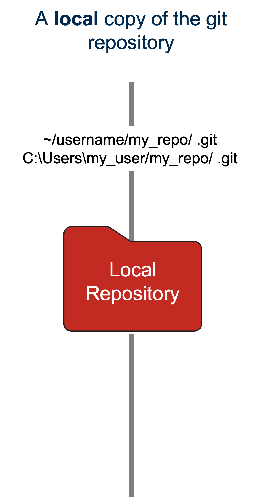

Python for Spatial Analysis – PY4SA
Module GG3209 - Second Part
School of Geography and Sustainable Development
Housekeeping
- Lecture with basic concepts and some demonstrations
- Labs with exercises, Assessment No 2
- Course Resources:
- Course Book (Labs, assessment, Slides)
- If something is not clear, stop me and ask.
- During exercises (you can also ask for assistance from the TAs).
Module in a glance
- What is Python, and why will you use it
- Building blocks – What components will we use
- Miniconda
- Jupyter Notebook
- Git – GitHub Account
- Python Basics
- Two notebooks for guidance
- One notebook for practice
Let me ask you something
- Do you have any programming experience?
- Why should we learn to program?
- Why should we learn Python if we can use QGIS or another GIS tool?

Failure
- You will fail, but that is ok, it is part of the process.
- Don’t be afraid of it.
- Error messages are scary, I know, but they are useful as well
Why Python
- A free and open-sourced scripting language that was commonly used to automate tasks (GIS world).
- Nowadays can be used to read, process and map spatial data. It uses a code structure, referred to as syntax, that is easy to read and understand.
- Syntax helps beginners to learn the language and helps professionals to minimise development and maintenance costs.
- Python has thousands of packages so that you can integrate a vast number of tools and programs.
What makes a Python script?
A Python script is a sequence of instructions. The structure and arrangement of the instructions are referred to as syntax. Python instructions use various language elements, including data types, statements, and functions.

Why is it so powerful
- Modules are collections of related code that contain variables, definitions, and instructions.
- These modules are organised into packages, which can be further grouped into libraries.
- These libraries are typically specialised and enable you to perform higher-level tasks related to those specialities.
- For example,
Pandasenables you to work with tabular data,NumPygrant the ability to make advanced mathematical and scientific computations, andMatplotliballows you to visualise data graphically.
- For example,
Python Modes
There are many ways to write and run a python script:
- Your terminal (Mac, Win, Linux)
- Python scripts (.py) (Programs)
- Ipython - Jupyter Notebook (.ipynb): Interactive, widely use in research
- Google Colab (Cloud service, require a google account)
- More…
Demo No 1:
Running a python Script
Demo No 1:
Running a python Script
9
Hello worldConda - Miniconda
Condais an open-source package and environment management system that runs on Windows, macOS, and Linux.- Conda easily creates, saves, loads and switches between environments on your local computer. It was created for Python programs but can package and distribute software for any language.
Minicondais a minimal installer for conda. It is a small version of Anaconda that includes only conda, Python, the packages they depend on, and a small number of other useful packages, including pip, zlib and a few others.
Jupyter Notebook (Lab)

- This is the python environment we will use to learn python and for our labs
- Easy-to-use environment
- Web-based
- Combines both text and code into one
- Come with a great number of useful packages
Learn more: Jupyter, VS Code, Text Editors
Jupyter Notebook Structure
Notebook Structure
Markdown
Markdown is a lightweight markup language that you can use to add formatting elements to plaintext text documents. Created in 2004, Markdown is now one of the world’s most popular markup languages.
Markdown Structure
- Markdown can be used for everything
- Markdown is portable
- Markdown is platform-independent
Demo No 2:
Jupyter Lab
GIT – Version control
Git is open-source software for version control, which means that it tracks changes to your files as you work on them over time.
Similar to “track changes” feature in a word document, except you must choose which versions to include in the tracking—it is not automatic.
It can be tricky, and we may or may not have issues; it happens to everyone. Widely used in academia and industry.
Github?
GitHub is a web-based version control system which uses Git, the open-source version control software. It provides a place for developers to host and share their projects — a space to save earlier iterations and collaborate with other developers, colleagues, or co-workers.
It can be used even to host websites, research projects, portfolios, data, and more.
It is widely popular and can be a way to get a job nowadays in the GIScience field.
How does it work

Terminology
- Repository: Is a project (a folder) containing files and sub-folders. A repository tracks versions of files and folders.
- Branch: A branch is a parallel version of your repository. By default, your repository has one branch named main and is considered the definitive branch. You can use branches to have different project versions at once.
- Clone: Local copy of a repository stored on the cloud. Clones can be synced up with their originals in the GitHub repository.
- Commit: A commit is a set of changes to the files and folders in your project. A commit exists in a branch.
- Fork: “Forking” is when you copy another user’s repository to your account. You can make any changes to your forked copy, leaving the original unaffected.
- Pull/push: Merging changes made to the repository files into the local copy you’re working on is called “pulling.” A “push” is the reverse — updating the repository files with changes you’ve made to your local copy.
- Pull request: Collaboration happens on a pull request. The pull request shows the changes in your branch to other people. This pull request will keep the changes you just made on your branch and propose applying them to the main branch.
- Merge: A merge adds the changes in your pull request and branch into the main branch
Demo No 3:
Git and GitHub
Recipe (Ingredients) for this course
- Python (ideally v3.10)
- Conda, more specifically MiniConda
- Jupyter Notebook Lab
- Git – GitHub Account
Lot of attractive packages (it’s like the seasoning) Like in any recipe, the right ingredients define the dish’s success; In here; installing your components appropriately will help run the python scripts correctly.
Python Basics
- Variables
- Types of variables (this is particularly important)
- Arithmetic operators
- Boolean logic
- Strings (Text)
- Printing (The initial way of debugging)
- Comments (The best investment of your coding time, trust me)

As simple as a calculator
Let us calculate the distance between U St Andrews and Edinburgh, but in kms
85.61710080000002Variables
- Great calculator, but how can we make it store values?
- Do this by defining variables
- Can later be called by the variable name
- Variable names are case-sensitive and unique
85.61710080000002Variables
We can now reuse the variable MileToKms in the next cell without having to define it again!
42.195390336Types of variable
Variables actually have a type, which defines the way it is stored. The basic types are:
Why this is important
To remember! We can’t do arithmetic operations on variables of different types. Therefore, make sure that you are always aware of your variables types! You can find the type of a variable by adding type(). For example: type(x).
intCasting types
Luckily, Python offers us a way of converting variables to different types!
Casting – the operation of converting a variable to a different type
30Similar methods exist for other data types: int(), float(), str()
Quiz
What would be the result?
'1020'Operations
(Arithmetic, Logical, Comparison)
List
- Allow to store multiple numbers, strings, or booleans in a single variable.
- Square brackets are used to denote lists. Items in a list are ordered, indexed, and allow for duplicate members.
- Indexing starts at 0.
Dictionaries
Are unordered, changeable, indexed, and do not allow duplicate elements. In contrast to lists each value is also assigned with key.
Tip
Values can be selected using the associated key. You can also use the key to define a value to change.
Dictionaries
Are unordered, changeable, indexed, and do not allow duplicate elements. In contrast to lists each value is also assigned with key.
Tip
Values can be selected using the associated key. You can also use the key to define a value to change.
{'code': 'GG3209', 'Name': 'Spatial Analysis with Python'}
Spatial Analysis with Python
{'code': 461, 'Name': 'Spatial Analysis with Python'}Arrays
Similar to lists; however, they must be declared. In this course, we will primarily work with NumPy arrays, which will be discussed in more detail in a later module.
[1, 2, 3, 4]
1
3
[1, 7, 3, 4]Commenting
- Useful when you want to remove the code from execution but not permanently
- Useful when your code needs further explanation. Whether for you or anybody else.
- Comments in Python are done with
#
Lab No 1
- Install your python environment and run the initial scripts.
- Ask us anything. Ask among yourselves as well
- Do not freak out; failure is progress!
References
Module GG3209 - Second Part